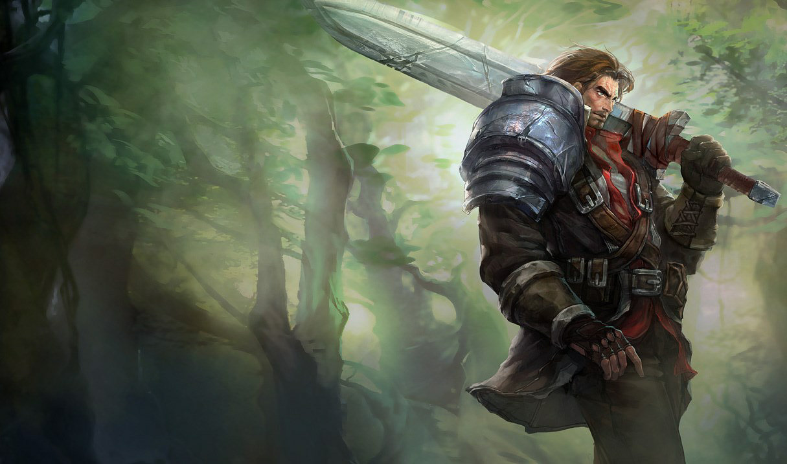

Characters
Gerome
Gerome: Human Background information: Gerome village was attacked by a group of monsters that seem to have appeared from nowhere when he was only 15 years old. In this uneventful event, his family and most of his village were killed. Gerome was only able to escape the massacre by running into the forest and hiding in the trunk of a rotten tree were he found a strange sword covered of moss and leaves... Equipment Vindicator (longsword/ broken Gemcore), short bow, leather armor, cave kit.
Devon
Devon: Dwarf, Background information: Devon trained as a soldier in Fire Isle of Charcoal. Devon left the army to join a mercenary company as it promised better pay. This mercenary company served as both army and city watch. Devon grew disillusioned with his fellow soldiers who seem to enjoy their authority at the expense of the people who you had to protect. Everything came to a head recently when he disobeyed an order and followed his conscience. Devon was immediately expelled from active duty losing his rank and authority. Since then he has devoted himself to his deity healing people as a cleric in her temple. However, after receiving an urgent card from his two brothers he immediately started heading north taking up his ax once again. Equipment: Large ax, two small axes, leather armor, medical kit.
Camille Altania
Camille: Human, Background information: Camille was not a stranger to wealth, power, and privilege when she was growing up. Her parents were the count and countess of Corrin Hill, a large estate located on the hill's northeast of the city of Espwa. However, when Camille turned 15, her father Count Altania lost a great amount of money due to gambling. Consequently, he was not going to be able to the yearly gold requested by the king. This being the third year not being able to pay he would lose his noble title and his land would be taken as payment. Her parents not wanting to lose their status and land, faked her death and sold her as a slave to the highest bitter. However, as she was being transported a herd of monsters attacked her transport; seeing this as an opportunity she jump into a river giving her a chance to escape. She was found the next day by an old hunter which saved her life. The old man adopted her as his daughter and tout her all he knew about hunting and tracking prey… Equipment: Short bow, short sword, hunter's kit.